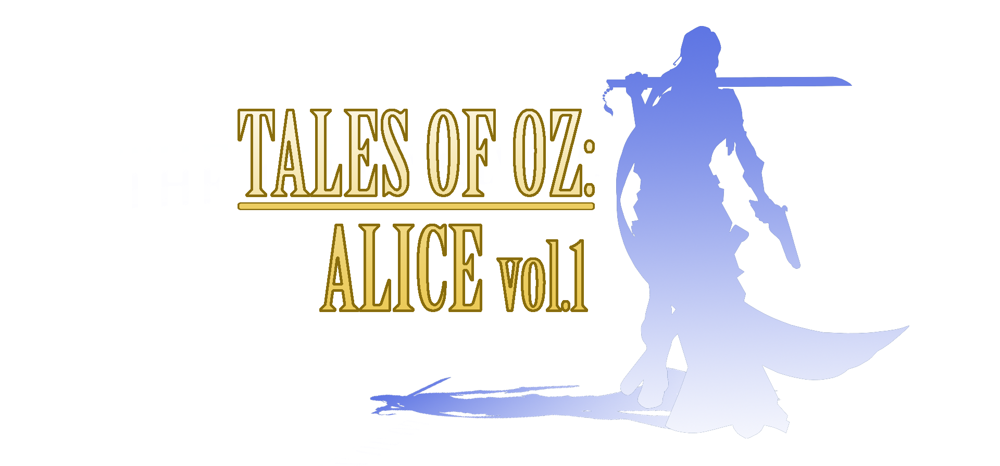
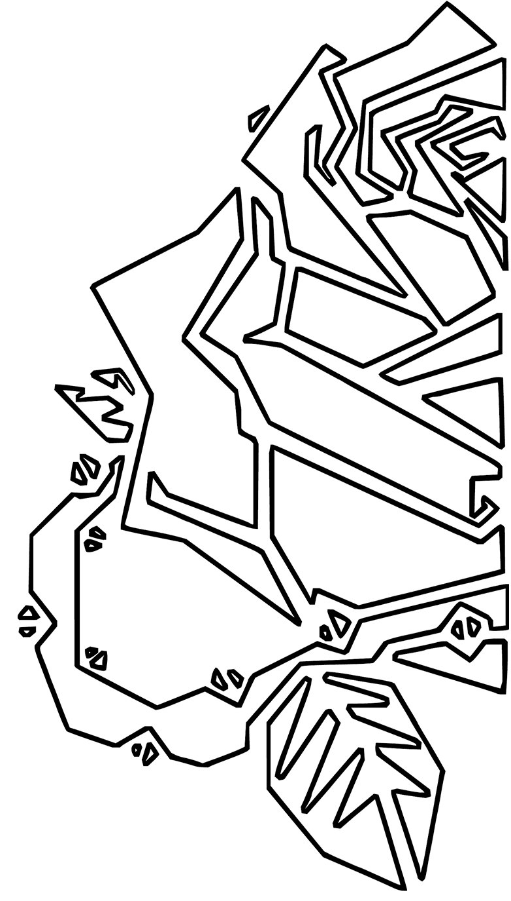

Proyectos de Duality ROSE

Tales of Oz: Alice vol.1
DemoUna historia fantástica contada como videojuego narrativo. Primera entrega de nuestra reinterpretación del mundo de Oz.
Seguir leyendo

Una historia fantástica contada como videojuego narrativo. Primera entrega de nuestra reinterpretación del mundo de Oz.
Seguir leyendo